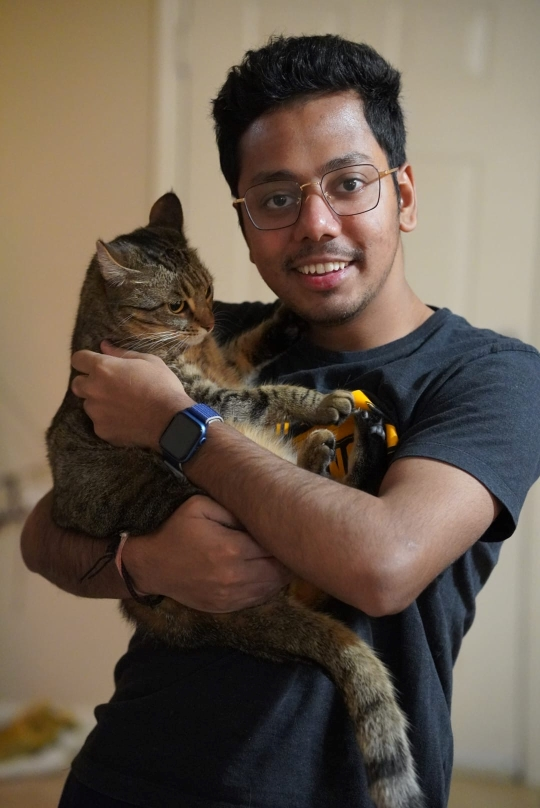
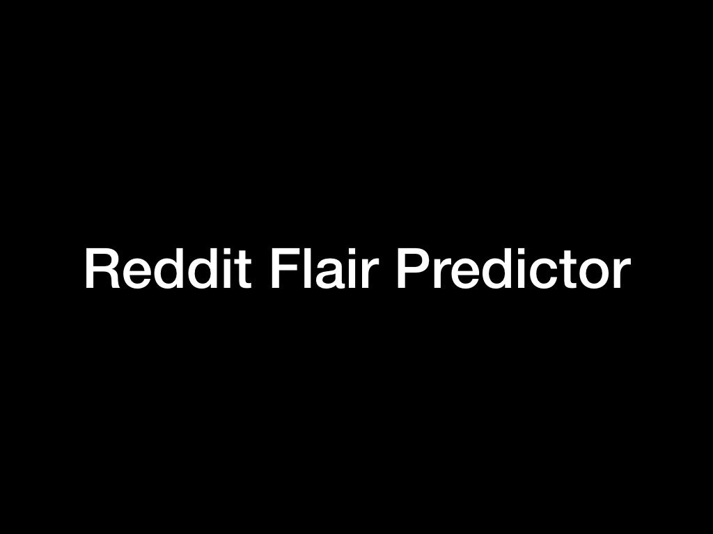
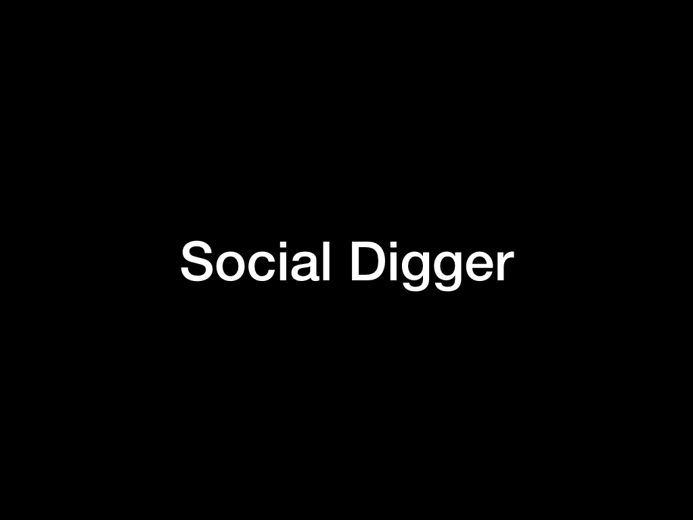
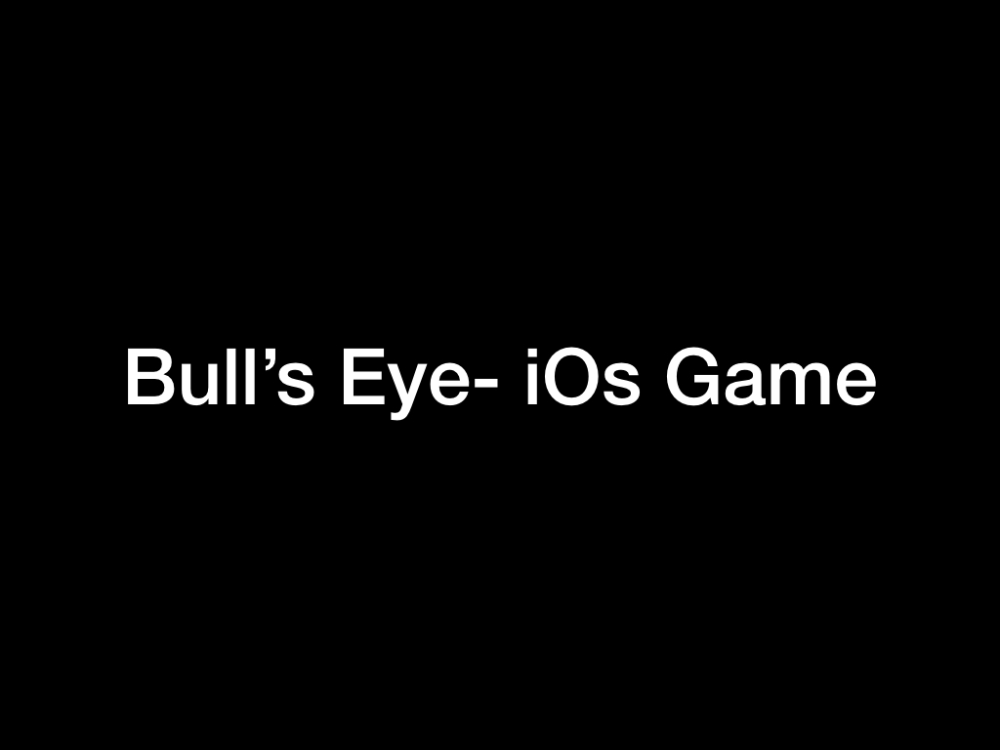

What I do
At Zotec Partners I focus on automation and integrations that improve operational reliability — from scripting repetitive tasks to working with structured data, logs, and pipeline tooling.
I'm Manthan Keim, an Automation Engineer at Zotec Partners. I design scripts, integrations, and data workflows that turn repetitive work into reliable systems — with a research background in NLP and machine learning from Purdue.

I combine engineering discipline with research curiosity — building practical automation today while drawing on years of NLP, data science, and full-stack project work.
At Zotec Partners I focus on automation and integrations that improve operational reliability — from scripting repetitive tasks to working with structured data, logs, and pipeline tooling.
A mix of industry automation work, research, and technical leadership.
Building automation, integrations, and tooling that streamline workflows and improve reliability across operational systems.
Resolved service tickets involving HL7 files, pipeline logs, patient payment data, and client credentials — developing a strong foundation in healthcare data operations.
Coursework and thesis work spanning NLP, data science, and computational research — including projects on text classification, misinformation, and social data analysis.
Led a student community of 15–20 builders, mentoring peers on web projects, apps, and technical experimentation.
Highlights from research, cloud-native work, and full-stack builds on GitHub.

Python data pipeline and analysis project showcasing structured data processing.

Machine learning research project focused on misinformation classification.
KubeCon hands-on work with Crossplane composition functions and Kubernetes tooling.

Social data exploration tooling built during earlier research-focused development work.
Open to conversations about automation, integrations, data workflows, and interesting engineering problems.